LOL MARCIE TOOK DOWN MARCEL.MTASA.EU AND ASSINK.MTASA.EU! SEE FOR YOURSELF
Introduction
Marcel "Dutchman101" Assink/Steijnens or "Jan Janssen"(?), also known as Ron is a developer of a multiplayer for Grand Theft Auto: San Andreas, called Multi Theft Auto, MTA/MTASA for short. He is part of the so-called anti-cheat (AC) team, and is the only active developer in the team (there is only one other member of the team which has been inactive for years).
However, said developer has been under a lot of heavy criticism, which we will argumentate for.
The AC of Multi Theft Auto has been proven to collect all the information about your computer, and all the information passing through.. including your keystrokes. Unlike the rest of MTA, it is closed source, see: github.com/multitheftauto/mtasa-blue
If you ask MTA's staff as to why the anti-cheat is closed source, they mostly answer that it is to keep it in safe hands away from cheaters. But couldn't the same be applied to the available source code? The robber doesn't need to know how the lock is designed, and why can't everybody contribute to the AC?
There is several evidence that has been gathered, along with Marcel discretely/openly admitting that he does see what you are doing and saying.
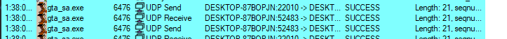
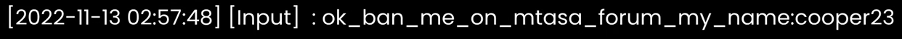
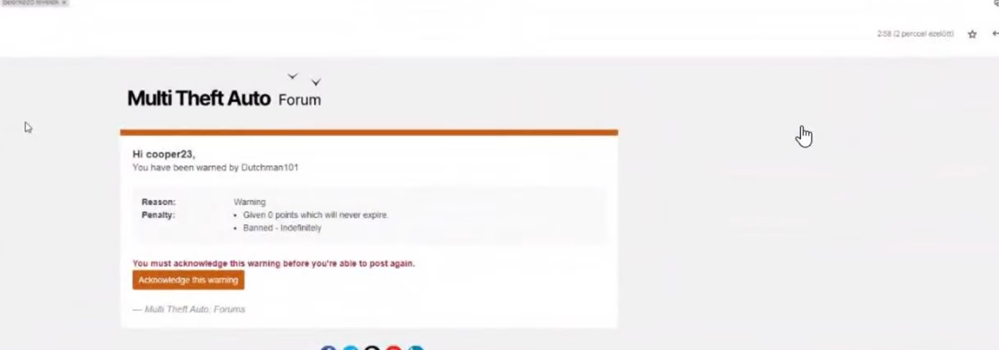
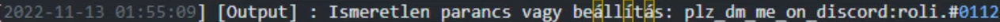
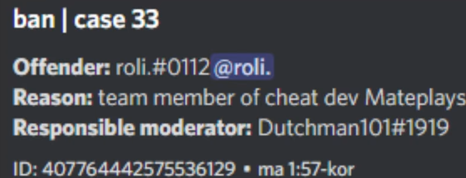
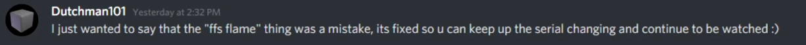
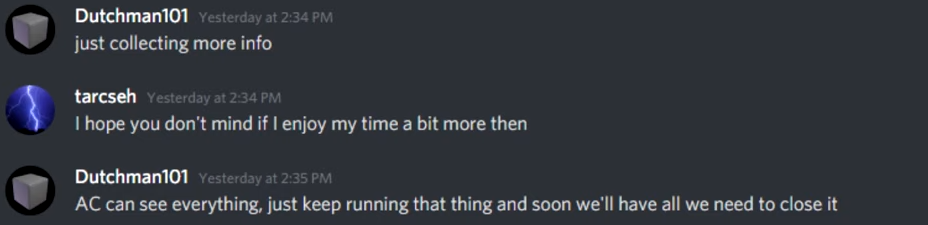
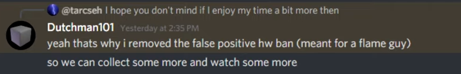
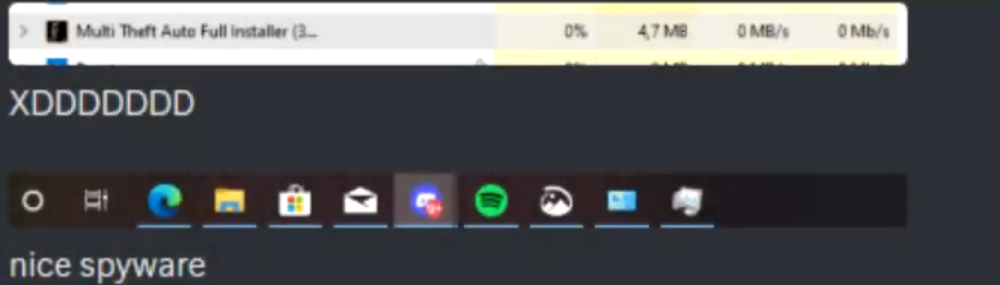
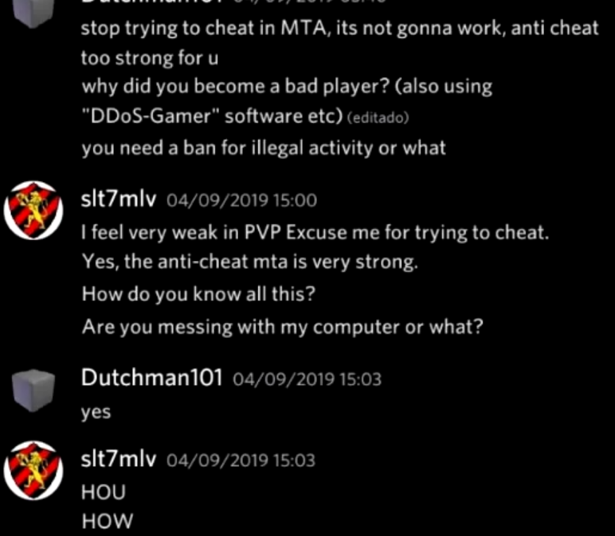
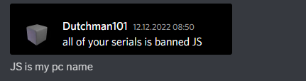
We can therefore conclude that the MTA AC collects an unreasonable amount of also unreasonable information that is not even necessary to detect cheaters, and all this information is not encrypted and can be directly seen and reviewed by Marcel.
It also demonstrates the immaturity of this individual, throwing around user information like it's nothing. Not only is the end user's system compromised, so are servers, the contents of which can be fully seen by Marcel as well.
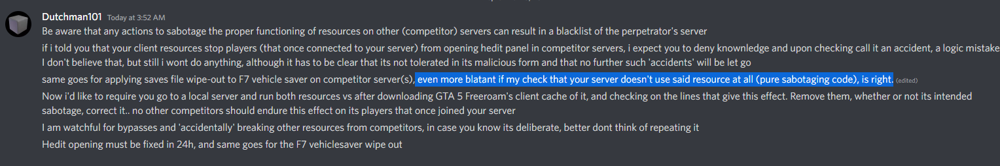
MTA also does not let you use compiled Lua scripts that were not compiled through their own compiler at luac.mtasa.com.
Their own site for decompiling exists, which is only accessible by the staff.. for basic users it claims that it's an "update server". However, originally it was like this: web.archive.org/web/luadec.mtasa.com
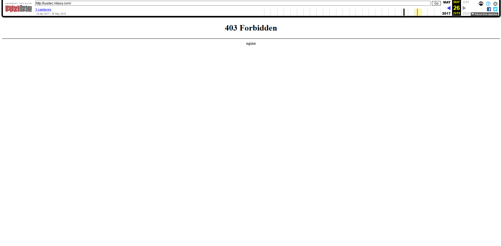
So, none of your compiled scripts are actually private.
One of the IP addresses associated with MTA is related to detected malware.
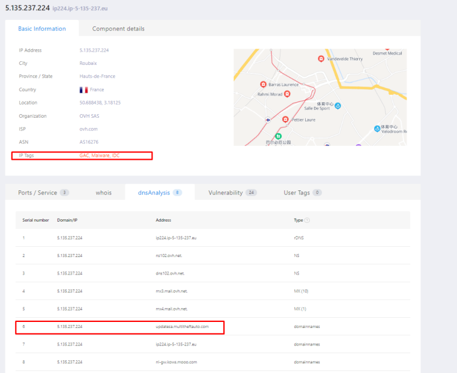
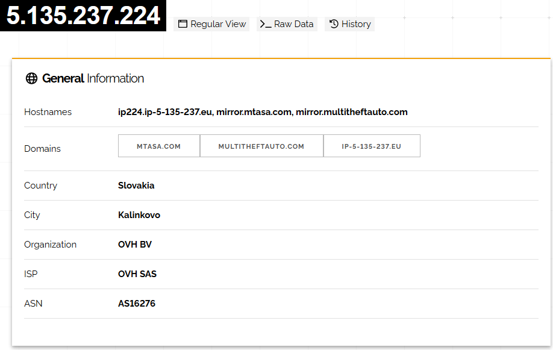
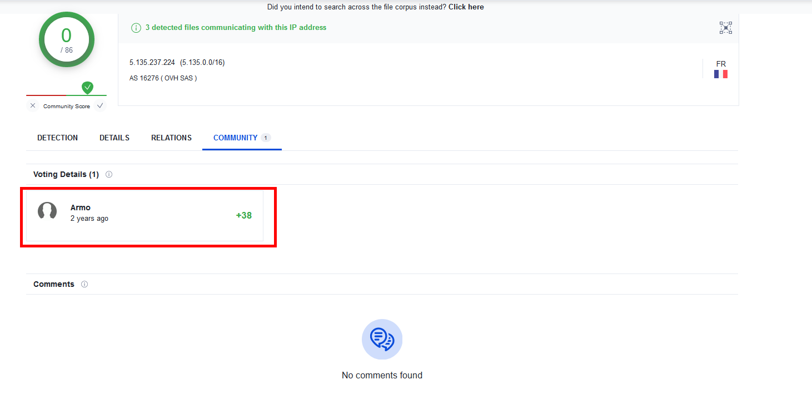
There is evidence that suggests Armo is Marcel himself.
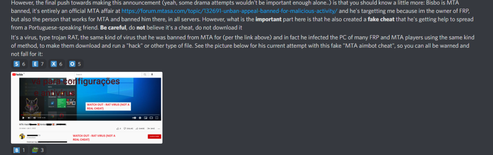
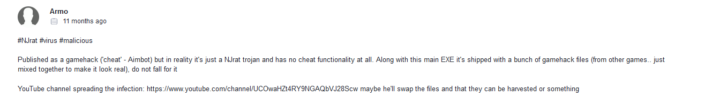
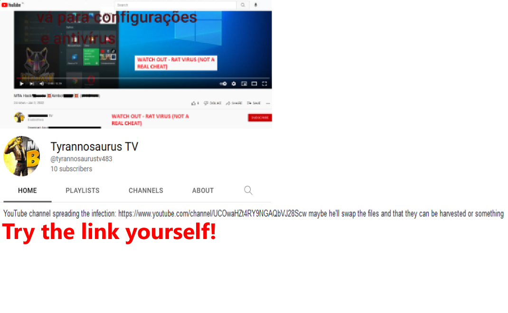
As you might have noticed, their style of writing is the same and both are talking about the same channel.. so Marcel just upvotes his own spyware.
You yourself can thoroughly scan all of them and see what they're related to, look them up, shit on them, fuck their families, etcetera..whatever you want basically.
Basically, MTA and all its domains/pages/sites/networks/machines/hostnaems/ips/etc are just a huge cesspool and a rabbithole. All evidence points to "well"-hidden spyware.
Marcel, despite accusing and/or banning people for stealing scripts, is also guilty of doing so. Most of those stolen scripts are used on his freeroam server (Default MTA Server || Freeroam [P])
There was also a case in which a representative of TRINITY Freeroam had uploaded texture replacements on the community site, his work was removed for being "unoptimized", and later his entire account on the site was disabled.
If you go to the community site, you can find plenty of high-quality, unoptimized texture replacements: community.multitheftauto.com/
And Marcel himself is guilty of uploading a high-quality, unoptimized texture replacement, which was also present on his freeroam server.
In MTA, there exists a toplist of servers. You can pay �12 for your server to become a part of that toplist. Although.. something went wrong and certain individuals, even after paying, did not receive their positions. In fact, their cause was rather spat on and mostly ignored by MTA staff.
The issue is still present as of this being written. (12/26/2022, 12:55 AM at UTC/GMT +4 hours)
One of the examples below is of an owner of a freeroam server which rivals that of Marcel. Link to the YouTube video: youtu.be/drk8Vg2n1bE
If you go to MTA's forum (forum.multitheftauto.com/), you can find many and many incidents just by searching for ban appeals. Some of them are by cheaters, but some of them are by actually innocent people.
A lot of drama has been occurring on that forum, and it mostly revolves around and/or involves Marcel. Much of the hate and criticism that Marcel receives is due to his unjustified, unfair and hypocritical banning of people from the entire game.
Ironically, majority of the people who cheat/conduct "malicious activity" on MTA is due to the fact that they were originally unfairly banned for "malicious activity" they did not do.
Below are a couple of examples.
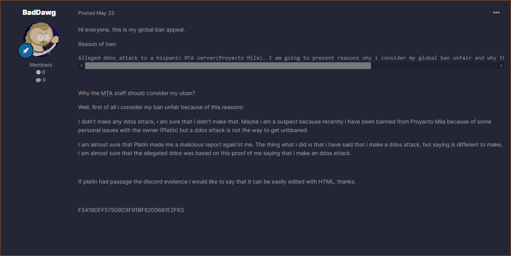
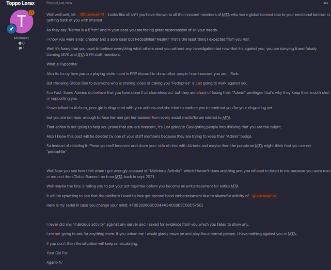
From this, you could confirm that Marcel simply bans people he doesn't like and makes up reasons to do so..however, the reasons are always poor. He also bans them with very little information or thought on the situation.
Marcel was caught cheating on a now-closed freeroam server (TRINITY). He is lying, because the reason he was banned in the first place was due to trolling players with aimbot & other cheats.
Here comes the question... why? For fun, probably. I don't know why he wouldn't test the cheats locally on himself, or with a friend.. yes, he was in the MTA AC team during that time period.
Marcel claims that he owns the most popular freeroam server, which is why people (mostly competitors) "target" him and "accuse" him. This, however, is false, as his server is extremely inactive even at times where it should be at its peak.
This, for one, is the online of his server on a Saturday midnight.
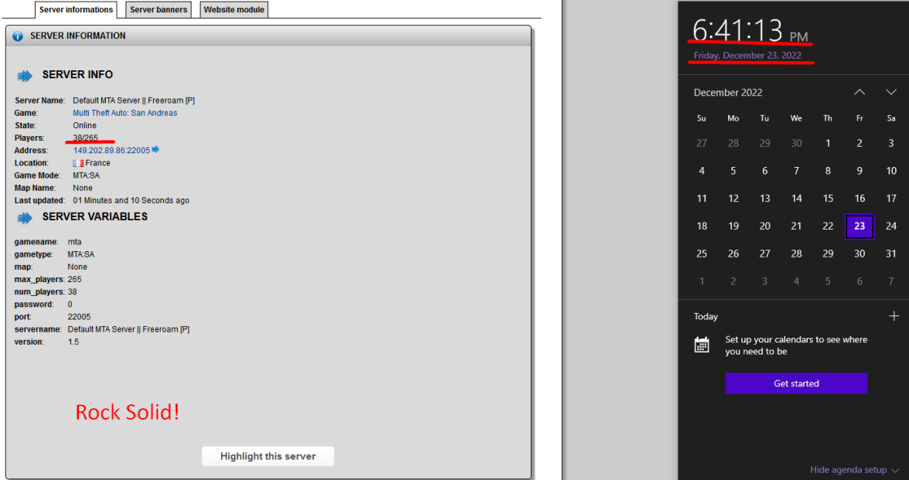
There is much more!
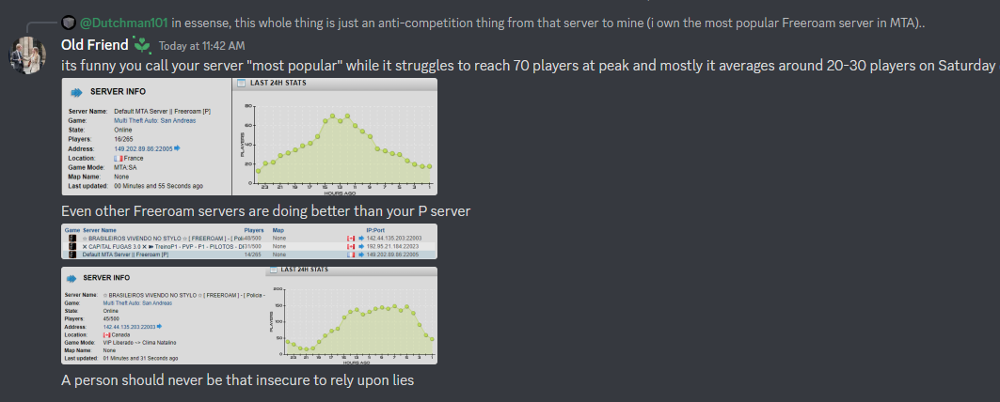
NOTE: The person who said that got banned and the message was deleted..lol
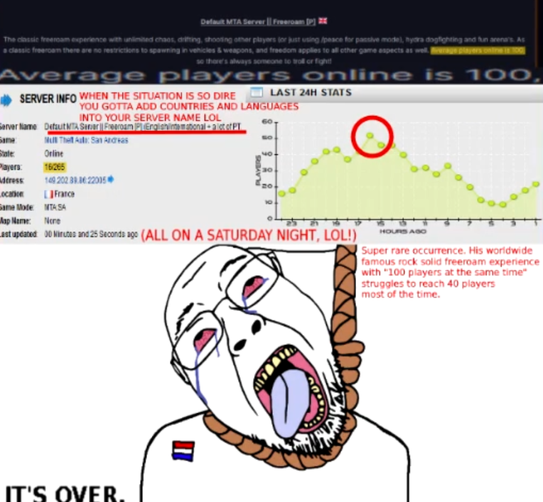
Even on sundays his server is very inactive.. he accuses of GTA 5 Freeroam targetting him, but would they really care? A tiger wouldn't hunt an ant, right?
Marcel is a cowardly, sneaky, pathological liar who abuses his power, violates the privacy of the people, steals the works of others without agreement or even giving bare credit. On top of that, he has the MTA staff to orbit him and protect him whenever anything happens.
How do you like him? This is a rhetorical question, I know how.